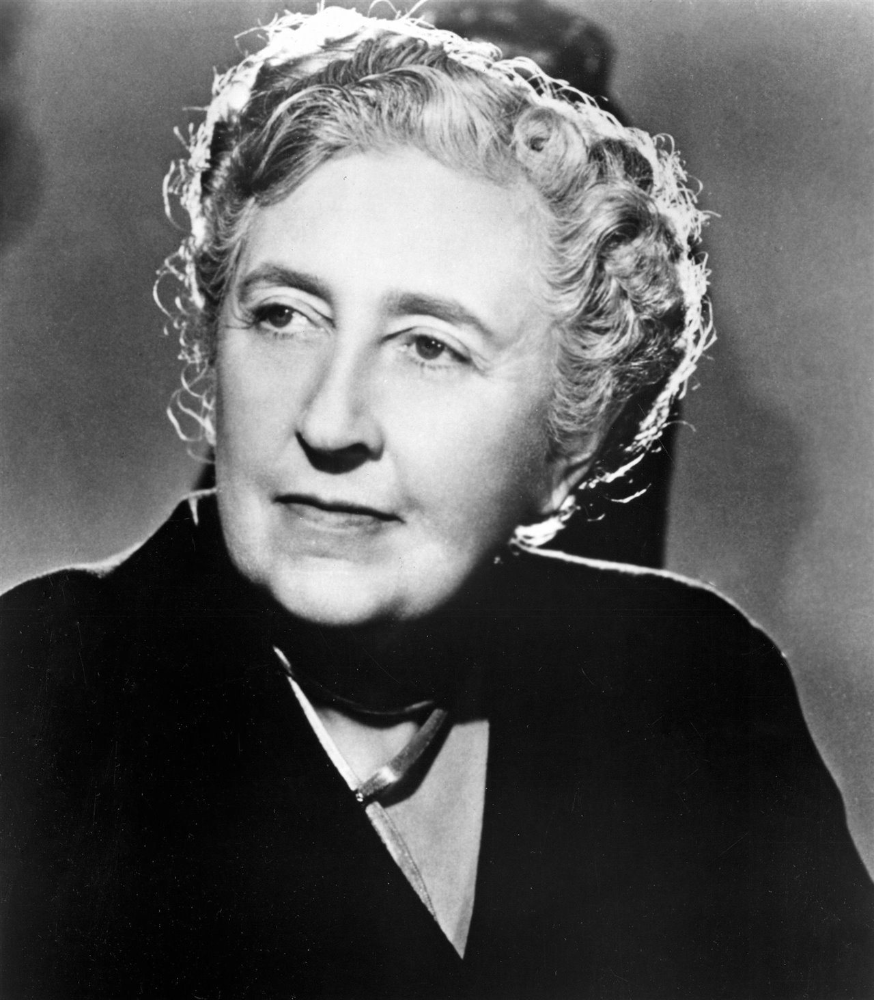

- ANDERSON (Greta)
- Dama de companyia de Fenella Guteman.
- BARTON (Frank)
- Tiet de Fenella Guteman.
- HARDCASTLE (Claudia)
- Germanastra de l'arquitecte Santonix.
- LEE (Esther)
- Gitana de Market Chadwell.
- LIPPINCOTT (Andrew P.)
- Advocat, anomenat familiarment “tiet Andrew” per Fenella Guteman.
- LLOYD (Stanford)
- Banquer, encarregat amb l'anterior de la custòdia dels interessos de Fenella.
- PHILLPOT (Comanadante)
- Persona destacada a la vida de Market Chadwell
- REUBEN (William R. Pardoe)
- Anomenat “tiet Reuben”, cosí de Fenella.
- ROGERS (Michael)
- Anomenat també “Mike”, protagonista.
- ROGERS (Señora)
- Mare de Michael.
- SANTONIX (Rudolf)
- Arquitecte amic de Michael
- SHAW (Doctor)
- Del poblat de Market Chadwell
- VAN STUYVESANT (Cora)
- Madrastra de Fenella Guteman
